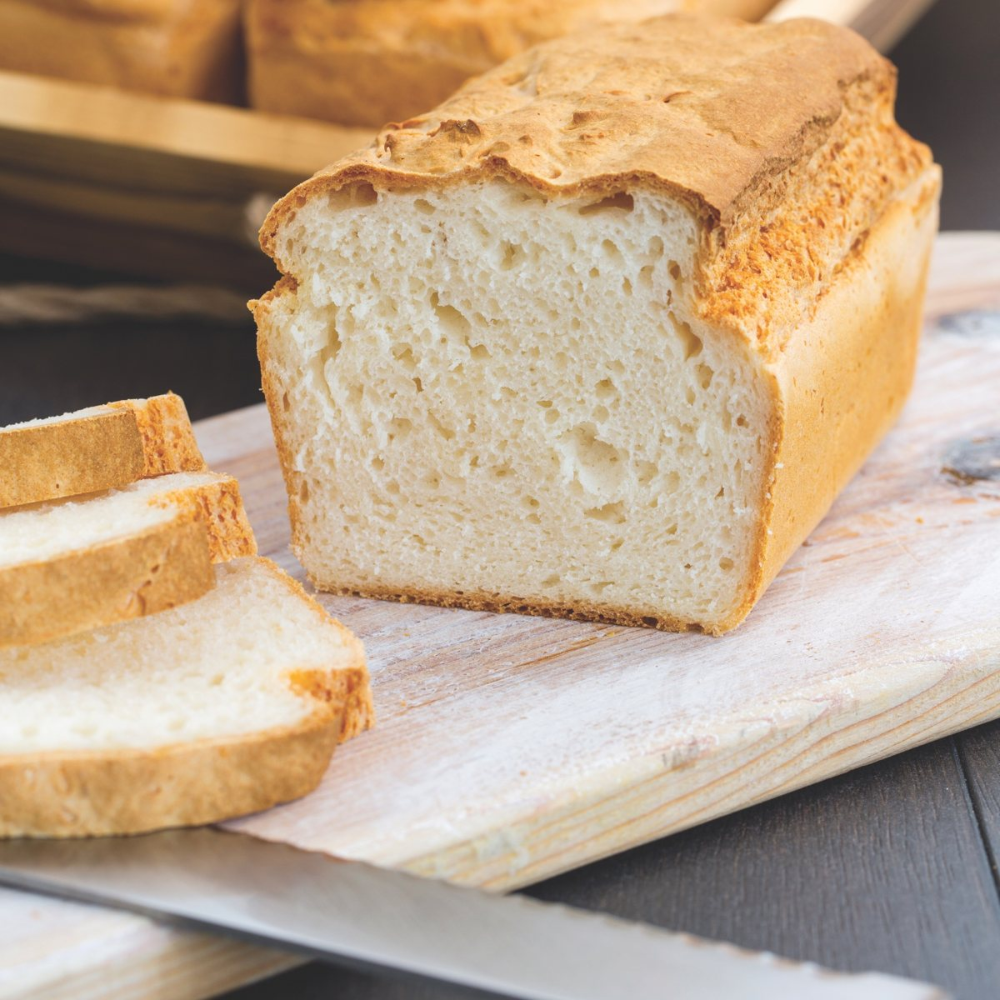

El nostre blog
Nutrició, ciència i les històries que hi ha darrere dels nostres productes.
 Els nostres productes · Octubre de 2026The Original Protein Bread: un pa amb índex glucèmic 24Un estudi de la Universitat de Sydney va mesurar l’índex glucèmic del nostre pa insígnia: 24, dins de la categoria d’IG baix. T’expliquem què vol dir.
Els nostres productes · Octubre de 2026The Original Protein Bread: un pa amb índex glucèmic 24Un estudi de la Universitat de Sydney va mesurar l’índex glucèmic del nostre pa insígnia: 24, dins de la categoria d’IG baix. T’expliquem què vol dir. Nutrició · Octubre de 2026Índex glucèmic: què és i com tenir-lo en compte en el teu dia a diaNo tots els hidrats de carboni pugen la glucosa igual ni a la mateixa velocitat. L’índex glucèmic ho mesura, i amb uns quants canvis el pots aprofitar.
Nutrició · Octubre de 2026Índex glucèmic: què és i com tenir-lo en compte en el teu dia a diaNo tots els hidrats de carboni pugen la glucosa igual ni a la mateixa velocitat. L’índex glucèmic ho mesura, i amb uns quants canvis el pots aprofitar. Nutrició · Octubre de 2026Proteïna: quanta en necessites i com repartir-la al llarg del diaLa proteïna és el material de construcció del cos. T’expliquem quanta en recomana l’EFSA i per què convé repartir-la entre l’esmorzar, el dinar i el sopar.
Nutrició · Octubre de 2026Proteïna: quanta en necessites i com repartir-la al llarg del diaLa proteïna és el material de construcció del cos. T’expliquem quanta en recomana l’EFSA i per què convé repartir-la entre l’esmorzar, el dinar i el sopar. Nutrició · Octubre de 2026Fibra: el nutrient al qual gairebé ningú arribaL’EFSA recomana com a mínim 25 g de fibra al dia, i a Europa la majoria ens quedem curts. Què fa la fibra i com sumar-ne més sense canviar els teus hàbits.
Nutrició · Octubre de 2026Fibra: el nutrient al qual gairebé ningú arribaL’EFSA recomana com a mínim 25 g de fibra al dia, i a Europa la majoria ens quedem curts. Què fa la fibra i com sumar-ne més sense canviar els teus hàbits. La nostra història · Octubre de 2026Pa i control del pes: la història del Dr. Pape i el nostre pa de proteïnesUn metge alemany especialista en nutrició i obesitat va voler que els seus pacients no haguessin de renunciar al pa. Així va néixer la recepta de The Original Protein Bread.
La nostra història · Octubre de 2026Pa i control del pes: la història del Dr. Pape i el nostre pa de proteïnesUn metge alemany especialista en nutrició i obesitat va voler que els seus pacients no haguessin de renunciar al pa. Així va néixer la recepta de The Original Protein Bread.
Sense gluten · Octubre de 2026Celiaquia: què és i quantes persones hi conviuenAl voltant de l’1 % de la població és celíaca, i la majoria encara no ho sap. Què és la celiaquia, què diuen les xifres a Espanya i com és menjar sense gluten a casa.